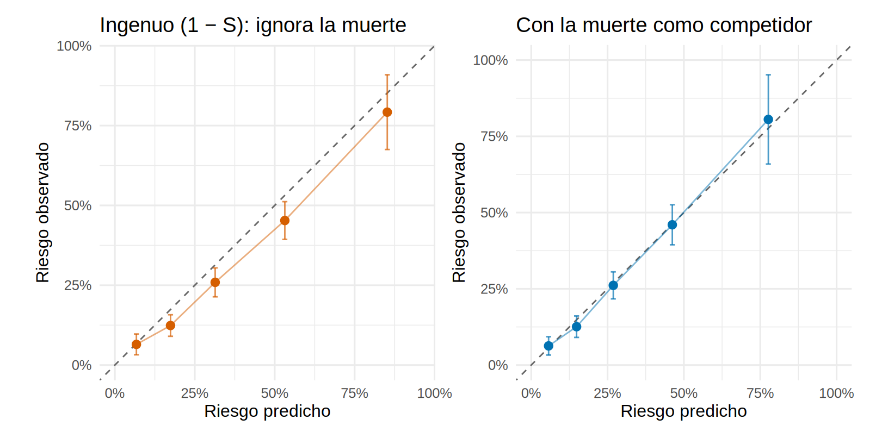
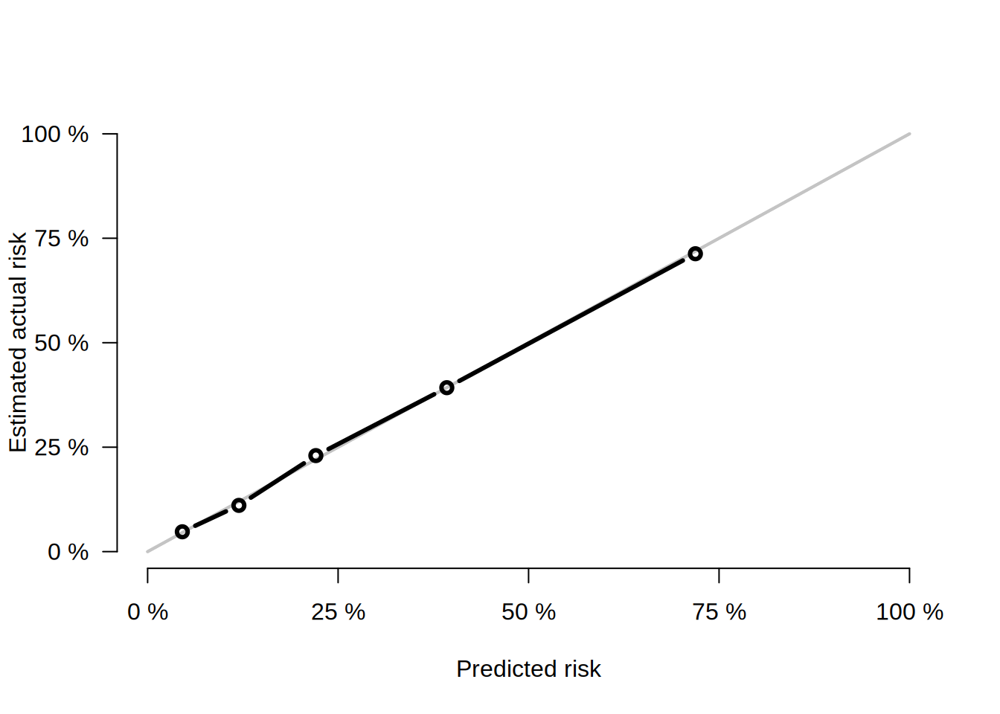
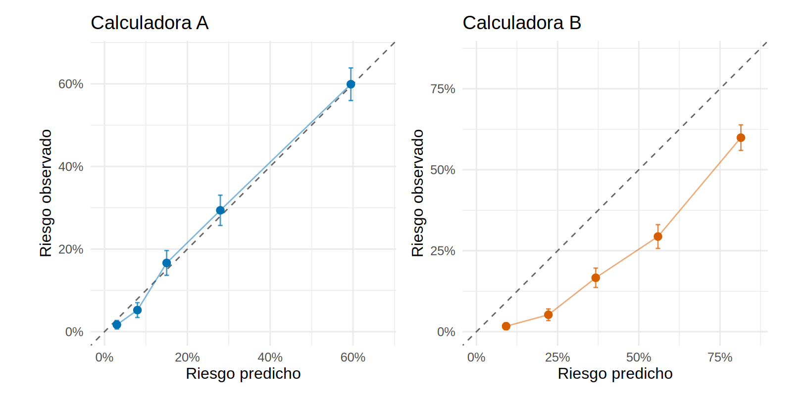

library(tidyverse)
library(survival)
library(riskRegression) # Score(): AUC y Brier con censura y riesgos competitivos
library(patchwork)
library(pROC)
source("R/funciones_extra_c17.R")
theme_set(theme_minimal(base_size = 12))
f2 <- \(x) sprintf("%.2f", x) # dos decimales para el texto
dev <- read_csv("Bases/cohorte_pronostico.csv", show_col_types = FALSE) |> preparar_pronostico()
mm <- ajustar_modelos_pronostico(dev) # los dos modelos de Cox de 17.2 (falla renal y muerte)
# Riesgo de falla renal a 2, 4 y 5 años (incidencia acumulada, contando la muerte como competidor)
horizontes <- c(24, 48, 60)
pred <- map(horizontes, \(t) cif_cox(mm$krt, mm$muerte, dev, t)) |> set_names(horizontes)
lp <- predict(mm$krt, type = "lp") # predictor lineal: ordena a los pacientes
# Oráculo: 100 000 pacientes de la misma población, sin censura (la verdad)
oraculo <- oraculo_pronostico(100000, "desarrollo", semilla = 99)
pred_or <- map(horizontes, \(t) cif_cox(mm$krt, mm$muerte, oraculo, t)) |> set_names(horizontes)¿Qué tan bueno es mi modelo? Discriminación, calibración, Brier y R²
Nota🩺 Escenario
Dos calculadoras de riesgo de falla renal presumen del mismo “AUC de 0.84”. A la misma paciente, una le dice que su riesgo a 2 años es de 10 % y la otra de 27 %. Si le planeas un acceso vascular o la derivas a trasplante según ese número, no te da igual cuál tenga razón. El AUC solo te dijo si el modelo ordena bien a los pacientes; no dijo si los porcentajes que da son ciertos.
Evaluar un modelo de pronóstico exige mirar cuatro cosas distintas:
- Discriminación: ¿ordena a los pacientes de mayor a menor riesgo? (C de Harrell, AUC).
- Calibración: ¿los porcentajes que da son ciertos? (gráfico de calibración, pendiente e intercepto).
- Error global: ¿qué tan lejos queda cada predicción de lo que ocurrió? (Brier).
- Varianza explicada: ¿cuánto “sabe” el modelo respecto de no saber nada? (\(R^2\) e índice de precisión predictiva).
Lo que vamos a hacer
- Calcular las cuatro medidas para el modelo de 17.2 y entender qué mide cada una.
- Ver que un modelo puede discriminar bien y estar muy mal calibrado.
- Comparar cada cifra con la verdad que da el oráculo.
Advertencia⚠️ Estas cifras son aparentes
Aquí medimos el modelo en los mismos pacientes con los que se construyó. Es lo que se llama rendimiento aparente y casi siempre es optimista (17.4). Por eso, cada cifra se acompaña de su valor verdadero (oráculo), que en la vida real no existe y se estima con validación interna y externa.
Paso 1: discriminación, la probabilidad de ordenar bien
La discriminación responde a una pregunta simple: si tomo al azar a dos pacientes, uno que llegó a falla renal antes que el otro, ¿el modelo le dio mayor riesgo al que falló antes? La proporción de parejas en que acierta es el índice C de Harrell (para eventos con censura; para un desenlace binario es el AUC). Vale 0.5 si el modelo no ordena mejor que lanzar una moneda y 1 si ordena perfecto.
Calculémoslo a mano en una submuestra de 500 pacientes, para ver que no es magia, y comparémoslo con la función de survival:
set.seed(1)
idx <- sample(nrow(dev), 500)
s <- dev[idx, ]; lp_s <- lp[idx]
# Pareja (i, j) "comparable": i tuvo falla renal y antes del tiempo observado de j
comparables <- outer(s$tiempo_meses, s$tiempo_meses, "<") & (s$krt == 1)
# La pareja es "concordante" si el modelo dio más riesgo a i que a j
concordantes <- outer(lp_s, lp_s, ">")
empates <- outer(lp_s, lp_s, "==")
c_mano <- (sum(comparables & concordantes) + 0.5 * sum(comparables & empates)) / sum(comparables)
c_survival <- concordance(Surv(tiempo_meses, krt) ~ lp_s, data = s, reverse = TRUE)$concordance
c(a_mano = c_mano, survival = c_survival, parejas_comparables = sum(comparables)) |> round(3) a_mano survival parejas_comparables
0.786 0.785 52481.000 Coinciden (la diferencia mínima viene de cómo se tratan los empates en el tiempo). Ahora con todos los pacientes y, además, el AUC dependiente del tiempo a 2 y 4 años, que pregunta: entre los que tuvieron falla renal antes de ese momento y los que no, ¿el modelo da más riesgo a los primeros?. En riskRegression, Score() lo calcula corrigiendo la censura y tratando a quien murió antes como “sin falla renal”, justo lo que hace falta con riesgos competitivos.
c_dev <- c_harrell(lp, dev$tiempo_meses, dev$krt)
sc <- Score(list(modelo = do.call(cbind, pred[1:2])),
formula = Hist(tiempo_meses, estado) ~ 1, data = as.data.frame(dev),
times = c(24, 48), metrics = c("AUC", "Brier"), cause = 1, null.model = TRUE, summary = "ipa")
sc$AUC$score |> as_tibble() |> select(horizonte_meses = times, AUC, inf = lower, sup = upper)# A tibble: 2 × 4
horizonte_meses AUC inf sup
<dbl> <dbl> <dbl> <dbl>
1 24 0.838 0.821 0.854
2 48 0.817 0.796 0.838# La verdad, con el oráculo (sin censura: AUC de un desenlace binario "falla renal antes de t")
real_or <- \(t) as.numeric(oraculo$estado == 1 & oraculo$tiempo_meses <= t)
auc_verdad <- map_dbl(c(24, 48), \(t) as.numeric(auc(real_or(t), pred_or[[as.character(t)]], quiet = TRUE)))
c_verdad <- c_harrell(predict(mm$krt, newdata = oraculo, type = "lp"), oraculo$tiempo_meses, oraculo$krt)
tibble(medida = c("C de Harrell", "AUC a 2 años", "AUC a 4 años"),
aparente = c(c_dev[["C"]], sc$AUC$score$AUC),
verdad = c(c_verdad[["C"]], auc_verdad)) |>
mutate(across(where(is.numeric), \(x) round(x, 3)))# A tibble: 3 × 3
medida aparente verdad
<chr> <dbl> <dbl>
1 C de Harrell 0.799 0.786
2 AUC a 2 años 0.838 0.824
3 AUC a 4 años 0.817 0.818Qué vemos.
- El C de Harrell es 0.80 en la cohorte (verdad: 0.79): de cada 100 parejas comparables, el modelo ordena bien unas 80.
- El AUC a 2 años es 0.84 (verdad 0.82) y a 4 años 0.82 (verdad 0.82). El modelo discrimina bien y algo mejor en el corto plazo.
- El valor aparente supera a la verdad en menos de 2 centésimos. Es poco optimismo (con 105 eventos por parámetro, 17.1) mezclado con la suerte del muestreo de esta cohorte; con menos eventos la brecha sería mayor.
- Por qué el 4 y no el 5: a los 60 meses casi nadie sigue observado (el seguimiento fue escalonado, entre 24 y 60 meses), y las medidas que corrigen la censura se vuelven inestables. Es una limitación real de muchas cohortes: mide el rendimiento a horizontes en que tengas seguimiento suficiente.
Paso 2: calibración, ¿son ciertos los porcentajes?
Un modelo está calibrado si, de los pacientes a quienes dijo “riesgo 30 %”, alrededor del 30 % tiene el evento. Se evalúa con un gráfico: ordenas a los pacientes por riesgo predicho, los divides en cinco grupos (quintiles) y comparas el riesgo predicho (eje horizontal) con el observado (eje vertical, la incidencia acumulada real del grupo con su IC). La diagonal es la calibración perfecta. Lo hacemos a 5 años, con las dos versiones del modelo de 17.2: la ingenua (1 − S, que ignora la muerte) y la que sí la considera.
pred_ing <- riesgo_cox_ingenuo(mm$krt, dev, 60)
cal_cif <- tabla_calibracion(pred[["60"]], dev$tiempo_meses, dev$estado, t = 60, g = 5)
cal_ing <- tabla_calibracion(pred_ing, dev$tiempo_meses, dev$estado, t = 60, g = 5)
g1 <- grafico_calibracion(cal_ing, "Ingenuo (1 − S): ignora la muerte", color = "#D55E00")
g2 <- grafico_calibracion(cal_cif, "Con la muerte como competidor", color = "#0072B2")
g1 + g2
Y los números que resumen cada gráfico:
# A tibble: 2 × 8
version predicho_medio observado oe intercepto ee_intercepto pendiente
<chr> <dbl> <dbl> <dbl> <dbl> <dbl> <dbl>
1 Ingenuo 0.388 0.341 0.879 -0.311 0.11 0.855
2 Con muerte 0.343 0.341 0.995 -0.011 0.103 1.03
# ℹ 1 more variable: ee_pendiente <dbl>Cómo leer la tabla:
-
predicho_medioyobservadoson el riesgo promedio a 5 años predicho y el realmente observado. Su cociente es O/E (observed/expected): 1 es lo ideal; menos de 1 es que el modelo sobreestima. -
intercepto(la calibración “en grande”): 0 es lo ideal; negativo, el modelo da riesgos de más en promedio. -
pendiente(la pendiente de calibración): 1 es lo ideal; menos de 1 es que las predicciones son demasiado extremas (típico del sobreajuste, 17.1), y más de 1, demasiado tímidas.
Qué vemos.
- La versión ingenua sobreestima: predice 39 % y observa 34 % (O/E = 0.88), y su gráfico queda por debajo de la diagonal, sobre todo en los grupos de mayor riesgo.
- La versión con la muerte acierta en promedio (O/E = 1.00) y su pendiente es 1.03 (error estándar 0.11): compatible con 1.
- Los IC de cada grupo son anchos porque a 5 años hay pocos pacientes aún observados. Mide siempre la calibración con IC; un punto fuera de la diagonal sin IC no significa nada.
Tip💡 Con el paquete {riskRegression}: calibración sin escribir la función
Score() puede guardar los datos del gráfico de calibración (plots = "calibration") y plotCalibration() lo dibuja. Es una alternativa a nuestra función (los argumentos pueden variar con la versión del paquete; aquí se ejecuta con la versión instalada).
sc_cal <- Score(list(modelo = pred[["48"]]), formula = Hist(tiempo_meses, estado) ~ 1,
data = as.data.frame(dev), times = 48, cause = 1, plots = "calibration",
metrics = NULL, null.model = FALSE)
plotCalibration(sc_cal, times = 48, method = "quantile", q = 5, cens.method = "local")
Paso 3: Brier y varianza explicada
El puntaje de Brier (Brier score) es el error cuadrático medio de las probabilidades: para cada paciente, mide la distancia al cuadrado entre lo que el modelo dijo (por ejemplo, 0.30) y lo que pasó (1 si tuvo el evento, 0 si no). Vale 0 si el modelo fuera perfecto, y mezcla discriminación y calibración: un modelo que ordena bien pero da porcentajes falsos sale penalizado. Con censura se pondera para corregir (Score() lo hace).
Su valor depende de lo frecuente que sea el evento, por eso se compara con el modelo nulo (dar a todos el riesgo promedio). La resta relativa se llama índice de precisión predictiva (index of prediction accuracy, IPA, o “Brier escalado”): \(1 - \text{Brier}_\text{modelo} / \text{Brier}_\text{nulo}\). Funciona como un \(R^2\): 0 = no mejora al nulo.
brier_aparente <- sc$Brier$score |> as_tibble() |> select(modelo = model, horizonte_meses = times, Brier, IPA)
# Verdad con el oráculo (sin censura, el Brier es el error cuadrático medio directo)
brier_verdad <- map_dfr(c(24, 48), \(t) {
y <- real_or(t); p <- pred_or[[as.character(t)]]
tibble(horizonte_meses = t, Brier_verdad = mean((y - p)^2), IPA_verdad = 1 - mean((y - p)^2) / mean((y - mean(y))^2))
})
brier_aparente |> filter(modelo == "modelo") |> left_join(brier_verdad, by = "horizonte_meses") |>
mutate(across(where(is.numeric), \(x) round(x, 3)))# A tibble: 2 × 6
modelo horizonte_meses Brier IPA Brier_verdad IPA_verdad
<fct> <dbl> <dbl> <dbl> <dbl> <dbl>
1 modelo 24 0.126 0.281 0.125 0.273
2 modelo 48 0.149 0.286 0.149 0.288El \(R^2\) (varianza explicada) tiene en los modelos de Cox varias versiones. La de Cox-Snell sale directo del estadístico de razón de verosimilitud (LR): \(R^2 = 1 - \exp(-\text{LR}/n)\). Su máximo es menor que 1 cuando el evento es poco frecuente, por eso se reescala a Nagelkerke (dividiéndolo por su máximo posible; Riley y cols., 17.1).
R2_Cox_Snell R2_maximo R2_Nagelkerke
0.286 0.720 0.398 Qué vemos.
- A 2 años el modelo tiene un Brier de 0.126 frente a 0.175 del modelo nulo: un IPA de 0.28, es decir, reduce el error en cerca de 28 % respecto de no saber nada. A 4 años, 0.29.
- Los valores aparentes y los verdaderos son parecidos (0.27 y 0.29).
- El \(R^2\) de Cox-Snell es 0.29, el mismo valor que usamos como “\(R^2\) esperado” en 17.1; el de Nagelkerke, 0.40.
- No hay un valor “bueno” universal para ninguna: dependen del problema. Lo informativo es compararlas con las de otros modelos (17.6) y con el modelo nulo.
Paso 4: discriminar bien y calibrar mal, a la vez
Para ver por qué las cuatro medidas hacen falta, fabricamos una calculadora B que ordena a los pacientes exactamente igual que nuestro modelo (A), pero con porcentajes inflados (suma 1.2 al logit de cada riesgo). Su discriminación no cambia (misma ordenación), pero su calibración sí:
p_a <- pred[["24"]]
p_b <- plogis(qlogis(p_a) + 1.2) # misma ordenación, pero con todos los riesgos inflados
sc_ab <- Score(list(A = p_a, B = p_b), formula = Hist(tiempo_meses, estado) ~ 1, data = as.data.frame(dev),
times = 24, metrics = c("AUC", "Brier"), cause = 1, null.model = FALSE)
resumen_ab <- left_join(as_tibble(sc_ab$AUC$score) |> select(model, AUC), as_tibble(sc_ab$Brier$score) |> select(model, Brier), by = "model")
resumen_ab |> mutate(across(where(is.numeric), \(x) round(x, 3)))# A tibble: 2 × 3
model AUC Brier
<fct> <dbl> <dbl>
1 A 0.838 0.126
2 B 0.838 0.165g_a <- grafico_calibracion(tabla_calibracion(p_a, dev$tiempo_meses, dev$estado, 24, 5), "Calculadora A", "#0072B2")
g_b <- grafico_calibracion(tabla_calibracion(p_b, dev$tiempo_meses, dev$estado, 24, 5), "Calculadora B", "#D55E00")
g_a + g_b
Qué vemos. El AUC es idéntico (0.84) porque el AUC solo mira el orden. Pero la calculadora B tiene un Brier peor (0.165 frente a 0.126), y su gráfico de calibración queda por debajo de la diagonal: a la paciente de nuestro escenario, a quien A le dice 10 %, B le diría 27 %. Un AUC alto con mala calibración es peligroso: lleva a decisiones equivocadas aunque el modelo “ordene bien”. Y por eso un artículo que solo reporta el AUC reporta la mitad de la historia (Van Calster y cols., BMC Med 2019).
Paso 5: resumen de las cuatro lentes
# Calibración a 5 años en la verdad (oráculo; sin censura el cálculo es exacto)
cal_verdad <- resumen_calibracion(pred_or[["60"]], oraculo$tiempo_meses, oraculo$estado, 60)
tribble(
~pregunta, ~medida, ~ideal, ~aparente, ~verdad,
"¿Ordena bien?", "C de Harrell", "1", c_dev[["C"]], c_verdad[["C"]],
"¿Ordena bien a 2 años?", "AUC(2 años)", "1", sc$AUC$score$AUC[1], auc_verdad[1],
"¿Acierta el riesgo medio a 5 años?", "O/E (5 años)", "1", cal_resumen$oe[2], cal_verdad$oe,
"¿Los porcentajes son tan extremos como deben?", "Pendiente (5 años)", "1", cal_resumen$pendiente[2], cal_verdad$pendiente,
"¿Qué tan lejos queda de lo que pasa?", "Brier (2 años)", "0", brier_aparente$Brier[brier_aparente$modelo == "modelo" & brier_aparente$horizonte_meses == 24], brier_verdad$Brier_verdad[1],
"¿Cuánto mejora al modelo nulo?", "IPA (2 años)", "1", brier_aparente$IPA[brier_aparente$modelo == "modelo" & brier_aparente$horizonte_meses == 24], brier_verdad$IPA_verdad[1]
) |>
mutate(across(c(aparente, verdad), \(x) round(x, 3))) |>
knitr::kable(align = "llrrr")| pregunta | medida | ideal | aparente | verdad |
|---|---|---|---|---|
| ¿Ordena bien? | C de Harrell | 1 | 0.799 | 0.786 |
| ¿Ordena bien a 2 años? | AUC(2 años) | 1 | 0.838 | 0.824 |
| ¿Acierta el riesgo medio a 5 años? | O/E (5 años) | 1 | 0.995 | 0.952 |
| ¿Los porcentajes son tan extremos como deben? | Pendiente (5 años) | 1 | 1.035 | 0.940 |
| ¿Qué tan lejos queda de lo que pasa? | Brier (2 años) | 0 | 0.126 | 0.125 |
| ¿Cuánto mejora al modelo nulo? | IPA (2 años) | 1 | 0.281 | 0.273 |
La discriminación y la calibración del modelo con la muerte son buenas en la cohorte de desarrollo; con la verdad de por medio vemos además que el aparente es algo más optimista: lo cuantifica la validación interna (17.4) y se verifica en datos nuevos (17.5).
Importante🎯 En resumen
- Un modelo de pronóstico se evalúa con cuatro lentes: discriminación (C, AUC), calibración (gráfico, O/E, pendiente), error global (Brier, IPA) y varianza explicada (\(R^2\)).
- El C de Harrell es la probabilidad de ordenar bien una pareja comparable; con riesgos competitivos usa también el AUC a un horizonte corrigiendo la censura y contando la muerte como “sin evento”.
- La calibración es la lente que más se olvida y la que más importa para decidir: reporta el gráfico con IC, el O/E y la pendiente (ideal 1; menor que 1 = sobreajuste).
- Un modelo puede tener excelente AUC y pésima calibración (calculadora B); el Brier y el IPA mezclan ambas.
- Mide a horizontes en que haya seguimiento suficiente: más allá, las métricas con censura son inestables.
Ejercicio
- Repite el gráfico de calibración a 2 años con deciles en lugar de quintiles (
g = 10). ¿Qué pasa con la anchura de los IC? - Cambia la calculadora B por
plogis(0.6 * qlogis(p_a))(porcentajes más tímidos). ¿Cómo cambia la pendiente de calibración (usaresumen_calibracion())? ¿Y el AUC? - Calcula el C de Harrell solo en los mayores de 75 años. ¿Es igual que en toda la cohorte? ¿Por qué un modelo suele discriminar peor en un grupo más homogéneo?